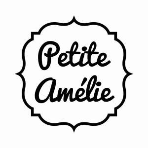

Trade Mark Journal No.2025/032 8 August 2025
UK00004241907 30 July 2025 (2,11,16,20,24,27,28)

- Class 2
- Coatings (paints); Paints; Interior paint; Wall coatings [paint]; Ornamental paints.
- Class 11
- Lighting and lighting reflectors; Decorative lights; Amenity lighting; Ceiling-mounted lights; Wall lights; Lamps; Street lamps; Table lamps; Floor lights.
- Class 16
- Paper and cardboard; Works of art and figurines of paper and cardboard, and architects' models; Wall furnishings of paper.
- Class 20
- Furniture; Picture frames; Picture and photograph frames; Wooden furniture; Beds; Furniture being convertible into beds; Furniture incorporating beds; Mattresses; Bedding, except linen; Mattresses; Soft furnishings [cushions]; Furniture for children; Cots; Playpens; Chests of drawers; Baby changing platforms; Babies' chairs; Cots for babies; Babies' bouncing chairs; Babies' bouncing chairs; Bedding for cots [other than bed linen]; Mats for infant playpens; Changing mats; Furniture for children; Children's beds; High chairs for babies; Chests for toys; Bedding for cots [other than bed linen]; Cupboards; Wardrobe lockers; Bookcases; Stacking dresser drawer units; Bedroom furniture; Bedside cabinets; bureaus; Stools; Footlockers; Rocking chairs; Bunk beds; Baskets, non-metallic; Chairs; Tables; Sofas; Armchairs; Office armchairs; Dressing tables; Staircase grates; Statues, figurines, works of art and ornaments and decorations, made of materials such as wood, wax, plaster or plastic, included in the class; Racks being furniture made of non-metallic materials; Poles for curtains; Drapery hardware; Wall decorations made of wood; Wooden boxes for storing toys; Wall hooks of non-metallic materials; Hooks for clothing.
- Class 24
- Textile goods, and substitutes for textile goods; Linens; Bed linen; Textile fabrics for use in the manufacture of bedding; Bed canopies; Children's blankets; Bed linen; Infants' bed linen; Bed throws; Bed sheets; Cot sheets; Cot blankets; Receiving blankets; Sleeping bags for babies; Mattress covers; Mosquito nets; Duvets; Quilt covers; Travelling rugs [lap robes]; Upholstery fabrics; Curtains; Wall decorations of textile.
- Class 27
- Floor coverings; Carpets; Rugs (Floor -); Wallcoverings; Wallpaper; Wall paper of vinyl; Textile wallpaper.
- Class 28
- Toys; Toy musical boxes; Children's playthings; Children's playthings; Dolls; Stuffed toys; Toy garages; Toys made of wood; Dolls' houses; Rocking horses; Baby rattles incorporating teething rings; Scale model aeroplanes; Building blocks [toys]; Pedal-propelled wheeled toys; Cases for toy vehicles; Tricycles (playthings); Toys adapted for educational purposes; Articles of clothing for toys; Costumes being children's playthings; Wind up toys; Nine men's morris sets; Toys made of plastics; Toy pushchairs; Toy furniture; Ride-on toy vehicles; Play shops; Soft toys.
'Petite Amélie' Licences B.V.
Representative: Haseltine Lake Kempner LLP